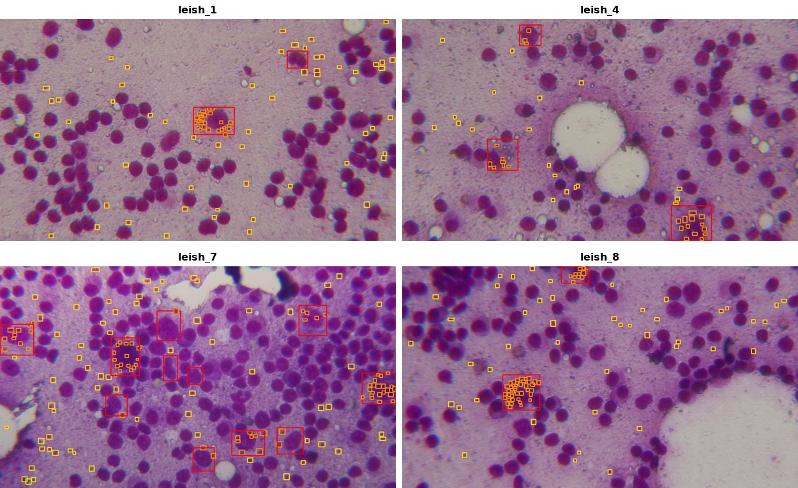

00_dataset_cvat — dados brutos
Anotações originais das 8 lâminas, exportadas do CVAT no formato YOLO 1.1 em março de 2026. É a origem de todos os datasets do projeto: o notebook 01_preprocessamento/01_filtrar_imagens_infectadas.ipynb lê esta pasta e gera 02_datasets_derivados/01_imagens_macrofagos_infectados/.
Não altere esta pasta. Para mudar algo nos dados, crie uma etapa nova em 01_preprocessamento/, com a saída em 02_datasets_derivados/.
Exemplos

Conteúdo
00_dataset_cvat/
├── task_leish_N_dataset_<data>_yolo 1.1.zip export original do CVAT, um por lâmina (2,7 GB no total)
└── leish_N/ o mesmo zip extraído
├── obj.names nomes das classes
├── obj.data metadados do export (classes = 4)
├── train.txt lista das imagens
└── obj_train_data/ pares <lamina>_<i>.png + .txt- Imagens: PNG de 1920×1080, 609 no total.
- Anotações: um
.txtpor imagem no formato YOLO,classe xc yc w h, com coordenadas normalizadas de 0 a 1. Todas as imagens têm ao menos uma anotação. - Lâminas: leish_1, 2, 3, 4, 5, 7, 8 e 9. Não há leish_6 neste export.
Classes (obj.names)
| Índice | Classe | O que é | Uso no projeto |
|---|---|---|---|
| 0 | Non-macrophages | Outras células | Não há nenhuma anotação desta classe no export. |
| 1 | macrophage | Macrófago | Define o centro dos recortes (etapa 02) e a região mascarada (etapas 03 e 05). |
| 2 | leishmania | Amastigota fora do macrófago | Alvo da detecção, remapeado para a classe única 0 nos experimentos. |
| 3 | inside-macrophage | Amastigota dentro do macrófago | Indica que o macrófago está infectado (etapas 01 e 02). Não é detectada. |
Números por lâmina
Contados diretamente nos zips. "Com infecção" são as imagens com ao menos uma anotação inside-macrophage, que a etapa 01 mantém.
| Lâmina | Export | Imagens | Com infecção | macrophage | leishmania | inside-macrophage |
|---|---|---|---|---|---|---|
| leish_1 | 2026-03-17 | 67 | 67 | 115 | 2.725 | 1.475 |
| leish_2 | 2026-03-17 | 52 | 46 | 175 | 1.541 | 782 |
| leish_3 | 2026-03-16 | 14 | 11 | 31 | 55 | 172 |
| leish_4 | 2026-03-17 | 47 | 47 | 187 | 140 | 1.170 |
| leish_5 | 2026-03-18 | 127 | 127 | 439 | 13.050 | 4.242 |
| leish_7 | 2026-03-18 | 95 | 95 | 398 | 5.723 | 4.001 |
| leish_8 | 2026-03-18 | 134 | 134 | 436 | 2.494 | 6.047 |
| leish_9 | 2026-03-18 | 73 | 72 | 292 | 2.835 | 2.538 |
| Total | 609 | 599 | 2.073 | 28.563 | 20.427 |
- A etapa 01 descarta 10 imagens sem nenhum macrófago infectado: 6 da leish_2, 3 da leish_3 e 1 da leish_9.
- Das 28.563 leishmanias fora do macrófago anotadas nas imagens inteiras, 10.688 ficam dentro dos recortes 512×512 usados nos experimentos. O resto está longe dos macrófagos infectados. O teste com imagens inteiras, que ainda está pendente, usaria todas.
- O desequilíbrio entre lâminas já existe aqui: a leish_5 tem 46% das leishmanias, e a leish_3 só 55.